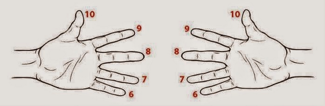
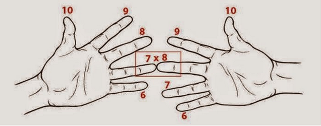
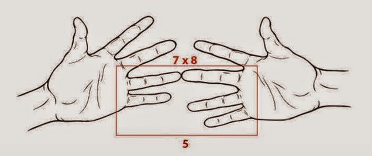
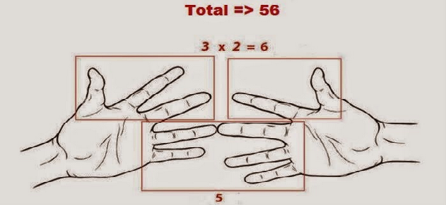

Cara Berhitung Yang Tidak di Ajarkan di Sekolah
- Matematika sering membuat orang sakit kepala, angka – angka yang mudah ternyata sanggup membuat banyak hasil yang rumit, benar – benar sulit dipercaya. Tapi ketika menyelesaikan permasalahan yang ribet dan tidak sangup menyelesaikannya, lihat cara di bawah ini, pasti kamu akan menjadi pecinta matematika.
1. Menggunakan jarimu untuk menghitung perkalian 6,7,8,9.
- Kalau mau menghitung jawaban dari 7x8, bisa menghitung dengan cara ini: 10 – 7 =3, jadi 3 jari di tangan kirimu adalah angka satuan, 2 jari di tangan kananmu juga adalah angka satuan. 2x3=6, jadi jawabannya untuk angka satuan adalah 6, jadi jari di bawah ditambahkan (2+3) adalah 5, jadi angka puluhan adalah 5. Jawabannya adalah 56.
Ex . . .
- kita tentukan dahulu mulai dari jari kelingking menjadi nomor 6 sampai ke ibu jari adalah nomor 10
- 
Con . . .
- contoh perkalian 7x8 (perhatikan gambar di bawah ini) sentuh jari-jarinya
- 
Con . . .
- hitung jarinya, (jari yang bagian bawah) setiap jari yang menyentuh hitung sebagai puluhan (jumlah jarinya 5=5 puluhan atau 50)
- 
Con . . .
- selanjutnya, kalikan jari-jari sisanya untuk menemukan satuan (contoh diatas, 3 jari dikali 2 jari = 6) tambahkan satuan ke puluhan , dan sekarang hasilnya adalah 56
- 
2.Perkalian 11-15
- Untuk mengalikan 12 x 14, mulailah dari tangan terkepal dan buka satu jari tiap maju 1 angka dari angka 10. Di tangan kiri, buka dua jari untuk menunjukkan angka 11. Di tangan kanan, buka empat jari untuk menunjukkan angka 14. Jumlahkan semua jari yang terbuka (2 + 4 = 6) lalu kalikan dengan 10. (6 x 10 = 60) Kalikan jari-jari yang terbuka di masing-masing tangan (2 x 4 = 8) lalu jumlahkan dengan hasil kali sebelumnya dan angka 100 (8 + 60 + 100 = 168). Akan didapat 12 x 14 = 168.
3. Cara menghitung dalam hati dengan mudah
- Sebenarnya banyak orang tidak menyadari bahkan kita pun tidak sadar, kita sering melakukan penghitungan dalam hati. Misalnya saat membeli barang, kita membayar barang tersebut dan menerima kembaliaannya, tanpa kita sadari, kita berhitung dalam hati kita, berapa jumlah kembalian yang ketika terima setelah membeli barang tersebut.